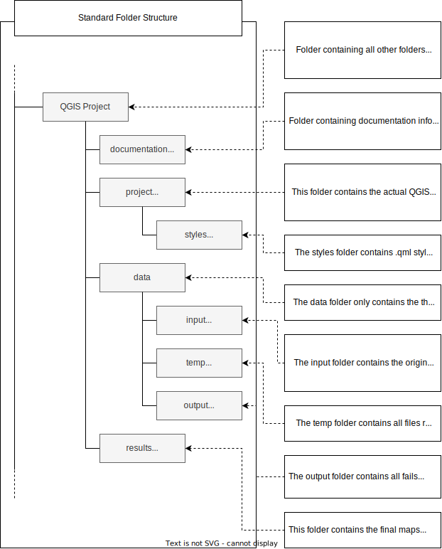

QGIS Basic Exercise SRCS#
CSV in QGIS#
Aim of exercise#
In this task, we will load a CSV file in QGIS and do some analysis.
Task 1: Load data in QGIS#
Open the folder “Exercise 2”. Go into the “data” folder and copy all data from the “input” folder into the “temp” folder
To load the file “Water_sources.csv” into QGIS click on
Layer->Add layer->Open Delimited Text Layer. Next toFile nameclick on the three points and navigate to your “temp” folder. Her select the file “water_sources.csv”.
and navigate to your “temp” folder. Her select the file “water_sources.csv”.Use the setings like in the image below.

Click
AddLoad the file “district_pop_som.shp” into QGIS
Tip
To directly load .csv or EXCEL data into QGIS, the datasets need to have columns containing geometry in the form of latitude (Y-field) and longitude (X-field).
Task 2: Counting water sources per district#
In the
Toolbox-> Search forJoin attribute by location (summary)Tip: If the
Toolboxis not opne clickProcessing->Toolbox
Input Layer: Select your “district_pop_som” layerInput Layer 2: Select “Water_sources”Geometric predicate: Select “Intersection”Field to summarise: Select “fid”Summaries to calculate: Chose only the option “count”Under
Join Layerclick on the three points-> Save to Fileand navigate to your “temp” folder. Give the output the name “district_watersources” and clickSaveClick
Run

Video: impoering .csv
Task 3: Calculating water sources per 10.000 people#
Open the Attribute Table of “district_watersources”
Click on
Field Calculator to open the field calculator
to open the field calculatorCheck
Create new fieldOutput field name: Name the new column “Watersources_pop”Result field type: Decimal number (real)Add the code into the
Expressionfield
( "fid_count" / "districtpo" ) * 10000

Click
okSave the new column by clicking on
 in the attribute table and end the editing mode by clicking on
in the attribute table and end the editing mode by clicking on 
Sorte the new column “Watersources_pop” and finde out wich districts have the highest and lowest number of water sources per 10.000 people
QGIS Intro#
Aim of exercise#
The goal of the exercise is to get to know the basic functionality of QGIS and how to handle geodata.
Task 1: Folder and data structure#
Save the folder Exercise_1 on your computer. Check out the folder structure in the Exercise_1 folder.
The standard folder structure used makes certain that you never lose any data. You can find more infos about the standard folder structure we recommend here.Please save your QGIS project in the “project” folder.
Copy the data from the “input” folder into the “temp” folder. During this exercise we will manipulate the input data, that is why we do not work with the original data in the “input” folder.
Tip
Intermediate results should also be saved in the “temp” folder. The final results should be saved in the “output” folder and your final maps in the “results” folder.

Task 2: Data import into QGIS#
Open QGIS and create a new project by clicking on
Project->New Project(Wiki).To give the project a name click on
Project->Save As. Navigate to “Exercise_1” and open the “project” folder. Give your project the name “Exercise_1” and click onSave. Now you should see the name of your project in the upper left corner of your QGIS.Open the file “Somaliland_country.shp” in QGIS. Click on the
LayerTab in the upper left corner ->Vector. Select “Somaliland_country.shp”. ClickAdd(Wiki Import Vector layer)
Video: Import Vector data
Open the file Somaliand_District_pop.gpkg in QGIS. Use the drag-and-drop method. Click on the file and pull the file directly into your Layers window.
Video: Import data by drag and dop
Open the files “Somalialand_District_pop.gpkg” and Somaliland_airports.gpkg with either drag and drop or via
Layer->Vector.Save your project by clicking on the
Save Projectbutton (small disc in the upper left corner).
Task 3: Interface#

Layers List / Browser Panel: The layers list shows all layers/files that are loaded in the project. You can show/hide layers and set other properties.
Toolsbars: Toolbars are shortcuts to execute frequently used commands. For example, there are special toolbars for vector and raster files, but also general ones for saving your project, etc. The toolbar contains, among other things, a list of all the commands you can use. The toolbar also contains the toolbox, which is used later in many of the wiki videos.

Map View: The map view is the central component of every GIS programme. This is where the geodata are displayed. The map view has a projection which does not always have to correspond to the projection of the layers.
Status bar: In the status bar you will find central information about the current map view. Here you can set the projection of the map view and the scale. You can read the coordinates of the mouse pointer and thus quickly find out the coordinates of points on the map. You can rotate your map view, e.g. if you want to create a map facing south.
Side Toolbar. You may see a side toolbar. This is another way to easily open vector and raster files in QGIS.
Locator bar. Here you can search for tools and layers. If you don’t know where to find a tool, you can try here.
Task 4: Layer concept#
In this task, we familiarise ourselves with the layer window (Layer List). The concept means that a map in GIS is always a combination of multiple layers. We can combine the layers in many different ways and thus get different results.
You can find more infos in the Wiki Layer concept.
Switch off the “Somalia_country” layer by removing the check on the layer panel (Wiki).
Video: Show and hide layers
Video:
Change the hierarchy of your layers so that “Somalia_airports” is at the top, followed by “Somalia_District_pop”. Move the layer up and down in the Layer panel by drag-and-drop Wiki.
Video: Import data by drag-and-drop
Move the “Somalia_country” layer to the top and switch it on. What happens?
Change the name of the layer “Somalia_airports” to Airports by right click on your layer –>
Rename Layer
Video: Change Layer Name
To the properties of a layer right click on your layer ->
Properies->Information.When was the layer “Somaliland_district_pop” last modified?
How many features does the airport layer have?
What geometry does the Somalia_country layer have?
Task 5: Attribute tables#
The attribute table, a core component of Geographic Information Systems (GIS), organizes and presents detailed information about features in a selected layer. Each row in the table represents a feature, while columns store specific attributes. This table facilitates searching, selection, sorting, filtering, and editing of features.
Example of an attribute table

Open the attribute table of “Somaliland_district_pop”. Right-click on “Somaliland_district_pop” –>
Open Attribute Table(Wiki)
Video: Open attribute Table
Sort by “Population” by clicking on the column header.
In the attribute table select the feature “Berbera” by clicking on the left edge of the row.
Video: Select features in Attribute Table
To select more features press
Ctrland click on the features.To only see selected features click in the down left corner of the attribute table on the drop-down menu and select
Show selected features. To show again all features click onShow all features.To only show unselect features and click on
 in the attribute table.
in the attribute table.To unselect all features click on
 in the attribute table
in the attribute table
Video: Unselect features
To zoom to one feature right click on your feature –>
Zoom To Feature
Task 6: Basic Data visualization#
Depending on the use case and type of geodata at your disposal, there are multiple ways to visualise geodata in a comprehensive format:
You can change the ‘styling’ and color of the data
You can add textlabels
All the styling in QGIS happens in Symbology
To open the symbology window of the “Somaliland_country” layer right click on the Somaliland_country layer ->
properties. A new window will open up with a vertical tab section on the left. Navigate to thesymbologytab.
Video: Opening the styling panel
Change the colour of the layer fill by selecting a style for the drop-down menu.
To change the colour of the borders of the “Somaliland_country” layer by clicking on
Simple fillin the symbology window and change the colour in theStroke Colourdrop-down menu.Adjust the thickness of the borders under
Stroke widthTo only show the boarders of Somaliland click on
Simple Fill->Fill Colour->Transparent Fill
Video: Only display the outlines of polygons
Add a OpenStreetMap base map by clicking on
Layerin the to left corner of QGIS ->Add Layer->Add XYZ layer...-> Select the OpenStreetMap
Video: Adding basemap
Task 7: Clipping and Extract by location#
Import the file Somalia_health_facilities_WHO.gpkg in QGIS.
Video: Import data by drag and drop
The layer Somalia_health_facilities_WHO includes health facilities in Somaliland and Somalia. We only want to use the facilities in Somaliland. To cut the layer to the size of Somaliland we will use the tool __clip. Open the
Porcessing Toolboxby cliking onProcessing-> search for “Clip”
Video: Open Processing toolbox
In the window of the Clip tool…
Input Layer: “Somalia_health_facilities_OSM”Overlay Layer: “Somaliland_country”Clipped: Click on the three points -> Save to File-> search for your “temp” folder -> give the result layer the name “Somaliland_health_facilities” and click onSaveClick
Run

Video: Clip example
Now you should have a new point layer with all health facilities in Somaliland. Delete the old “Somalia_health_facilities_WHO” layer by right-click on the layer ->
Remove layer
Task 8: Data visualization- Categorized classification of Points#
Categorized classification in QGIS groups spatial data into distinct categories based on specific attributes. This classification enhances the organization and interpretation of geospatial information for clearer insights.
Open the attribute table of “Somaliland_health_facilities_OSM” by right clicking on “Somaliland_health_facilities_OSM” ->
Open Attribute TableCheck out the column “Facility t”. This column has the data on the type of the health facility. As you can see there are not just hospitals but many different typs of facilities like Health posts.
To categorise all facilities by type on the map, open the symbology window. Right-click on the “Somaliland_health_facilities_OSM” layer ->
properties->symbologyClick on
CategorizedValue: “Facility t”. Further down the window click onClassify. Now you should see all unique values or attributes of the selected “Facility t” column.We only want to see the hospitals, so uncheck Maternal & Child Health Centre, Health Post and Health Center.
Click
Apply

Video: Categorized classification Example
To use a prearranged style for the hospitals go to the Symbology window. In the down left corner click on
Style->Load StyleIn the new window click on the three points
. Navigate to the “Project” folder -> “Style” folder and select the file “Hospital_style_training.qml. (Wiki)Click
Open. Then click onLoad StyleBack in the “Layer Properties” Window click
ApplyandOK